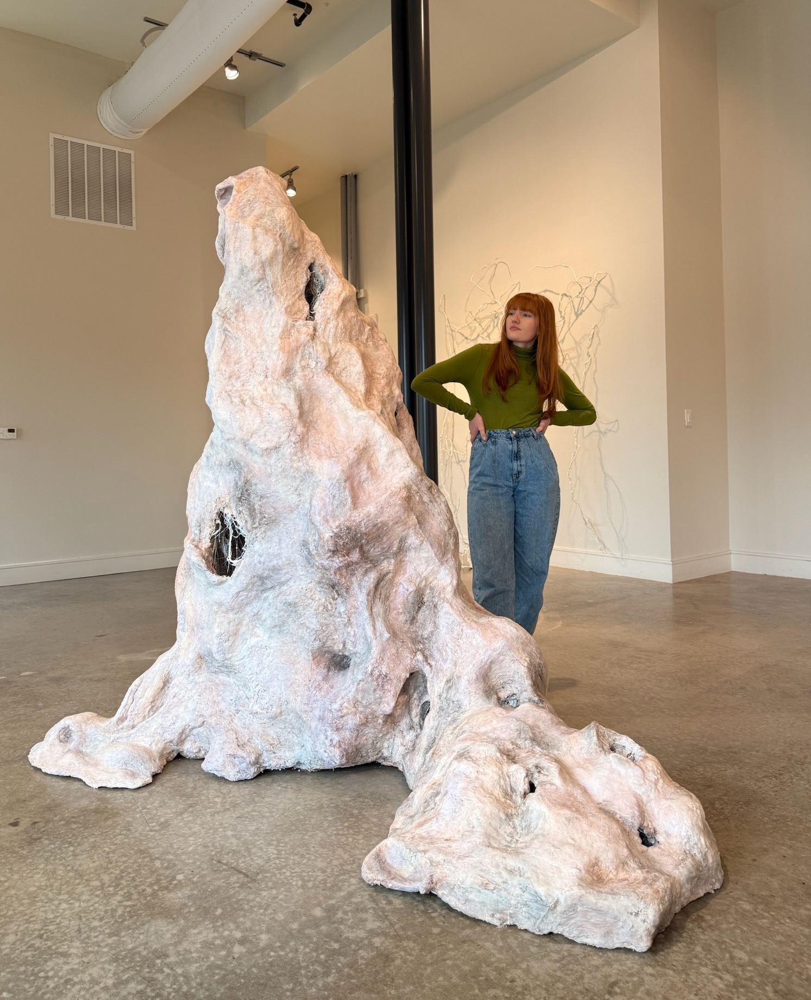

Marcy Davis
Marcy is a third-year MFA candidate in Sculpture at Texas Christian University. She earned her BFA with honors from the University of Texas at Arlington, with a minor in glass. Her work draws from the remnants and ruins within the architecture of the body.

 _mars_studio_
_mars_studio_